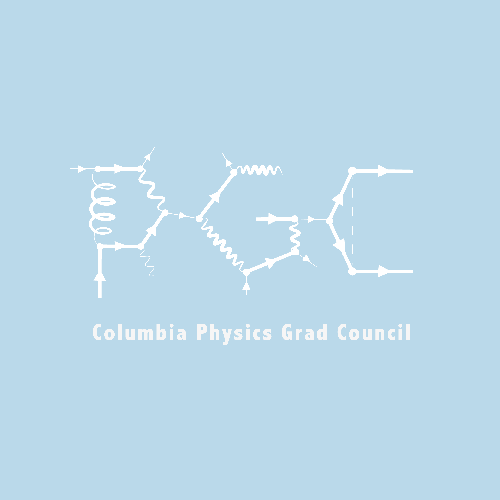
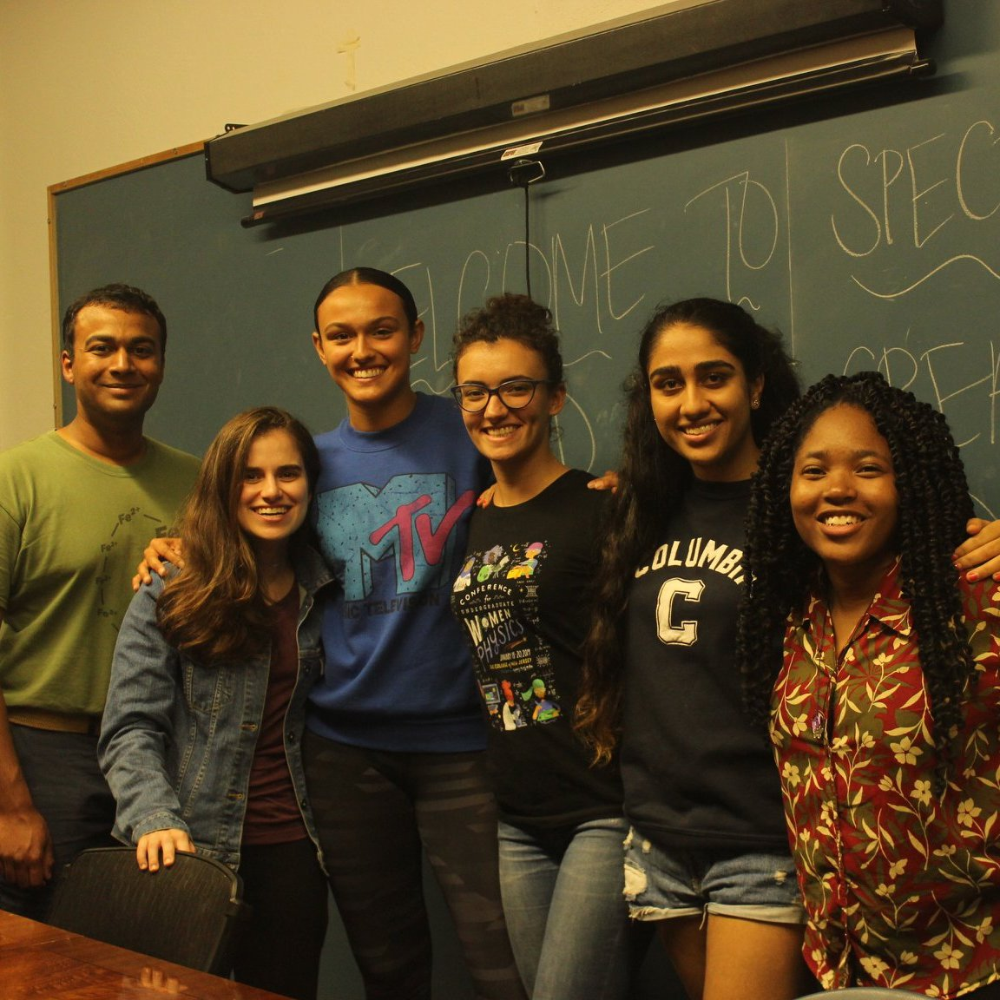
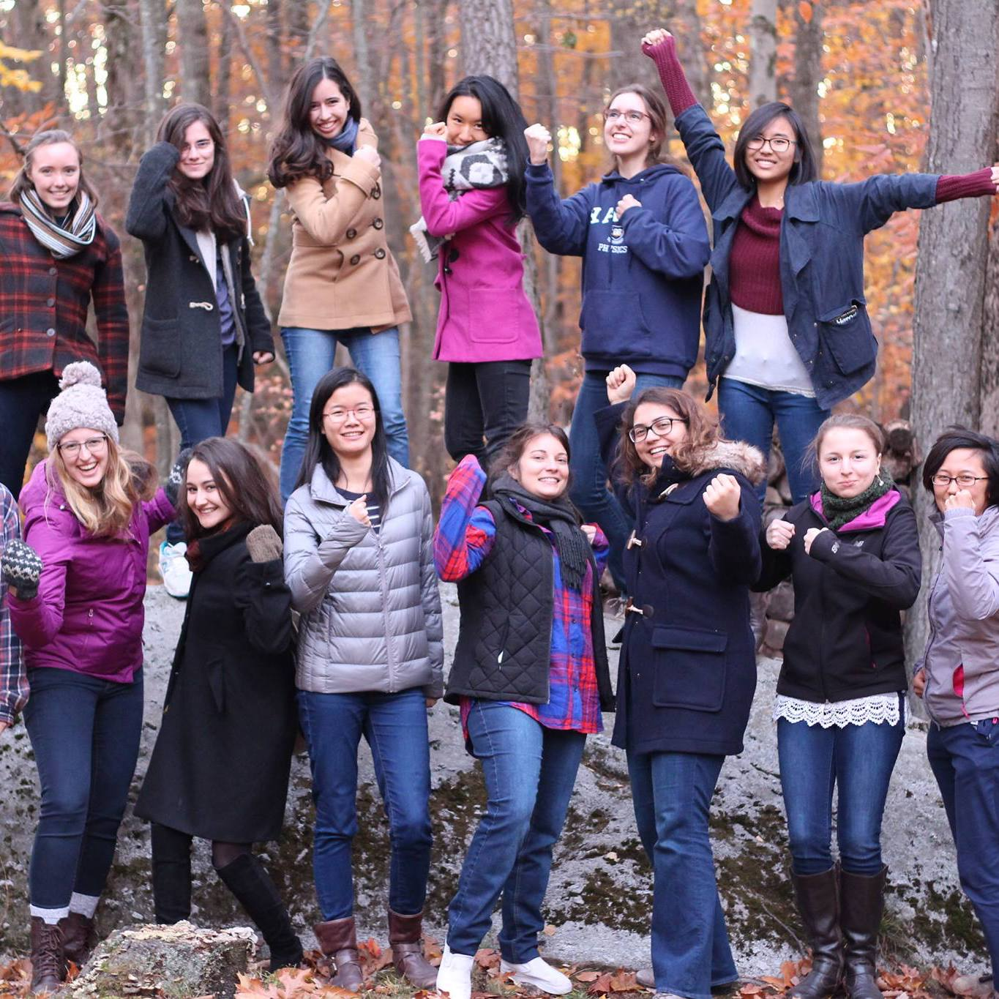
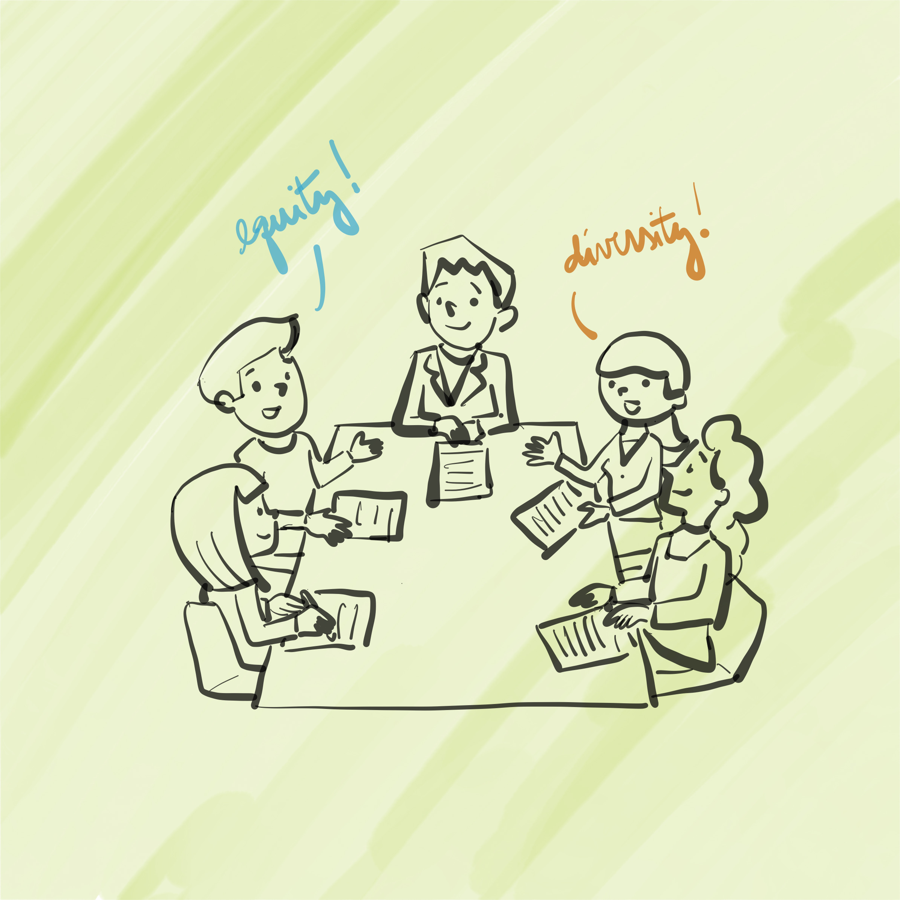
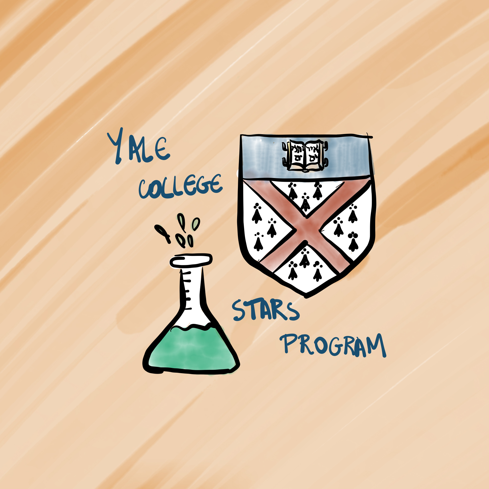

Columbia Physics Grad Council
I currently serve Columbia Physics Graduate Council (PGC) as their president. I have also served the PGC as their first Climate and Diversity Liaison for a year. The PGC works as a formal link between Columbia Physics Ph.D. students and our department leadership. As such, we interact with the department chair, faculty and committees to promote reforms to improve student quality of life tackling course requirements, qualifying exams, dedicated spaces, diversity and equity, teaching, etc. We also organize social events to foster a more welcoming community and town halls to discuss important social topics that affect our community members. For instance, our first town hall addressed how to support black and brown students, staff and faculty. We also ran a survey in which we found that women were disproportionately affected by our current qualifying exam structure. (Logo developed by Bárbara and Isabella Cruvinel Santiago.)QUALS SURVEY REPORT PGC WEBSITE PGC FACEBOOK

Columbia Spectra
I served as Spectra's grad student advisor for two years. Spectra, formerly known as the Columbia Society for Women in Physics, is a student group to promote diversity in physics. The group changed its name in 2019 to make sure underrepressented groups other than women also felt welcome and had a space for them in our department. Spectra provides mentorship to underrepresented undergrads in physics, astronomy and applied physics, as well as panels, lunches with faculty, and community-building social events. In the past, we have organized "Snack and Solve" for minority students to work on problem sets with the assistance of a grad student TA while dinner is served, liquid nitrogen ice cream study breaks and movie nights. We also got the department to give us a room where Spectra hosts its events, dubbed the C.S. Wu Study Room, which is now the only one in the department decorated with images of women and POC scientists.SPECTRA WEBSITE SPECTRA FACEBOOK

Yale Women In Physics
I first joined Yale Women in Physics (WIP) as a sophomore to co-organize the APS Conference for Undergraduate Women in Physics hosted at Yale in 2015. I served WIP as their co-president the following year. As such, I hosted events including panels, lunches with female faculty speakers, and social events to foster a community in our department such as liquid nitrogen ice cream study breaks. The events were open to anyone in the physics community in need of a welcoming space. I was also responsible for WIP's online presence, creating WIP's website, and a weekly newsletter with upcoming events and news about female physicists. Up to now, WIP is still a thriving community at Yale!WIP WEBSITE WIP FACEBOOK

Yale Physics Climate and Diversity Committee
For over two years, I sat at the Yale Physics Climate and Diversity Committee, a group of faculty and students that sought to implement ways to make our department more inclusive. We addressed issues brought up by students as well as looked into initiatives from other institutions that we taught would be interesting to bring to our department. One of my main contributions included writing a report on concrete steps that the department could take to help low-income physics majors like myself have access to the same opportunities and hence perform as well as wealthier students. Some of the suggestions on my report are now under implementation.PROPOSAL FOR FGLI STUDENTS PHYSICS CDC WEBSITE

Yale STARS Program
As a Science, Technology, and Research Scholars (STARS) mentor in my senior year, I was assigned to six freshmen who were interested in studying science at Yale, all of whom were either in underrepresented groups in STEM or came from low-income families. As part of my work, I met up with them one-on-one and as a group every week, helped them finding resources to ease their transition to college, assisted them in finding research opportunities, and connected them to potential mentors. One of my mentees (George Iskander) invited me to found SU(5) (check out my teaching/mentoring page) with him after he graduated and started his own physics Ph.D. program.STARS WEBSITE